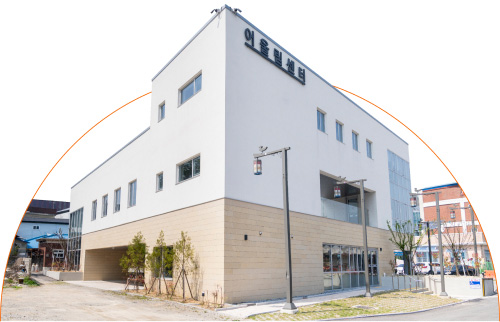
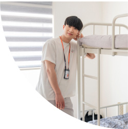
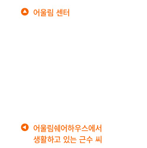
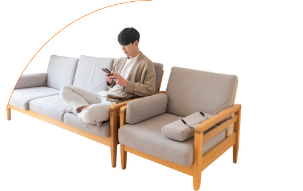

막막했던 앞날을 고민하는
청년들이 모여 내일을 계획하고
준비하는 곳
청년들이 모여 내일을 계획하고
준비하는 곳
막막했던 앞날을 고민하는 청년들이 모여
내일을 계획하고 준비하는 곳
내일을 계획하고 준비하는 곳
근수 씨를 만난 곳은 부안에 위치한 ‘어울림쉐어하우스’입니다. 월드비전과 전라북도 부안군은 지난 3월 부싯돌 프로젝트 업무협약을 체결해, 프로젝트를 실시하고 있습니다. 부싯돌 프로젝트는 지역에서 자립을 꿈꾸고 있는 청년들을 위한 실전형 취·창업 교육 프로그램인데요. 청년들은 7월까지 매달 생활비 60만 원을 지원받고 부안군 내에 위치한 어울림쉐어하우스에 거주합니다.




또한, 지역 명소와 특산물 등 지역 자원을 활용한 상품 및 서비스 기획개발 과정을 배우며 스스로 하고 싶은 일을 찾아갑니다. 아울러 또래 청년들과 폭넓은 소통 기회를 통해 네트워크를 형성하는 과정을 거치며 사회화도 배워 가지요.